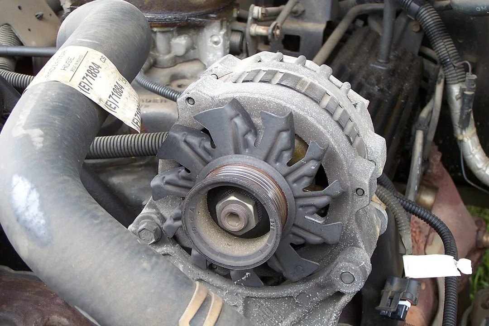

Ремонт стартеров
Если при запуске слышен щелчок или двигатель прокручивается с трудом, расскажите об этом мастеру.
Мастерская · Курск
Ремонтируем агрегаты иномарок и продаём запчасти к ним.

Осмотр деталей
Выберите агрегат. Скан можно вращать и приближать.


Среди деталей стартера — корпус, обгонная муфта, ротор, обмотка и втягивающее реле.
С чего начать обращение
Если при запуске слышен щелчок или двигатель прокручивается с трудом, расскажите об этом мастеру.
Если пропала зарядка или на панели загорелся индикатор аккумулятора, опишите, когда это произошло.
Продаём комплектующие к стартерам и генераторам. Для уточнения совместимости пригодится артикул с корпуса или фото маркировки.
Перед обращением
Марка, модель, год и двигатель, если знаете.
Что происходит при запуске или когда пропадает зарядка.
Артикул или фото маркировки и название нужной детали.
Да, мастерская продаёт запчасти к стартерам и генераторам. Подходящую деталь и наличие уточняйте у мастера.
Свяжитесь с мастером и расскажите, какой агрегат и что происходит с машиной. Стоимость мастер уточнит по вашей ситуации.
Курск, улица 50 лет Октября, 177, второй этаж. Вход и маршрут отмечены в 2ГИС.
Центральный округ · Курск
В 2ГИС можно посмотреть вход, график и номер для связи.
Открыть в 2ГИС